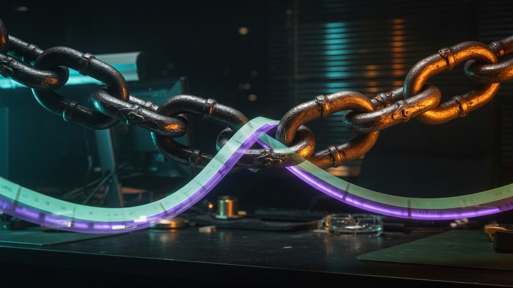

In
Onboarding, attention cost, unsolved briefs. The chain removes the routine that makes the front expensive.
Flagship
Kills routine. Closes work that is already solved — and work that is not. Cuts project cost on the way in and the way out.

Onboarding, attention cost, unsolved briefs. The chain removes the routine that makes the front expensive.
Delivery, stop triggers, close triggers. Solved work exits. Unsolved work becomes a parameter, not theatre.
Agreed-model code, updated in real time as-is. Data model → code event → close trigger → stop trigger.
All three tabs. No questionnaire stored. Tribute takes payment; we keep an HMAC token.
1 490 ₽ / month